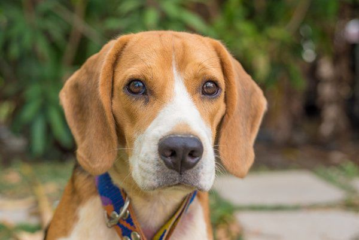
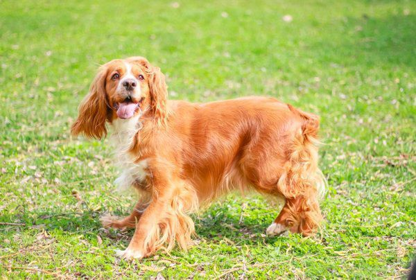
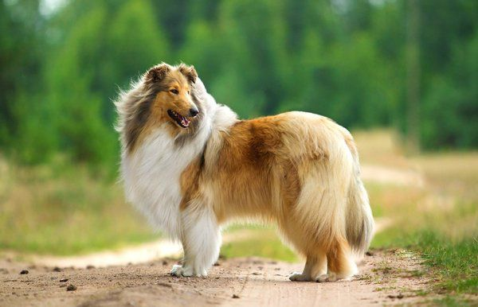
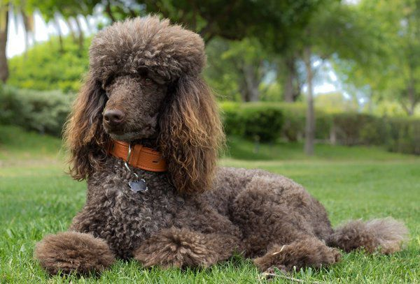
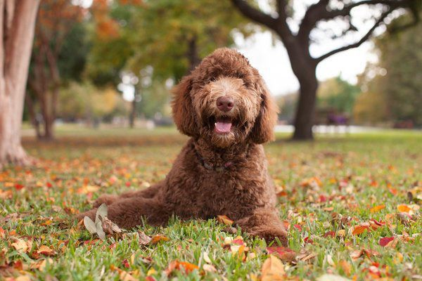
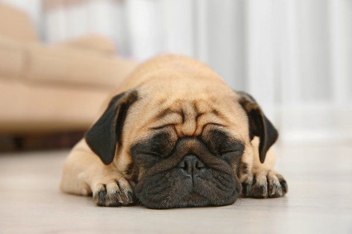
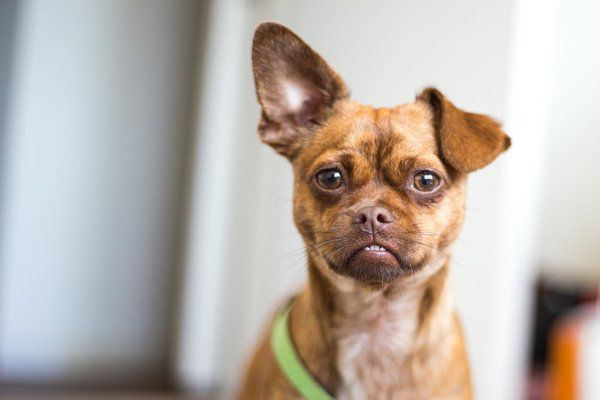

Кавалер Кінг Чарльз Спаніель

Ця порода є чудовим домашнім улюбленцем. Такі собаки ніжні, спокійні, їм подобається, коли їх розчісують. Хоча Кінг Чарльз Спанієль не дуже полюбляє активні ігри, така порода краще підходить для міського стилю життя, та для чутливої дитини, інформує Ukr.Media.
Золотистий ретривер

Золотистий ретривер є одним із найпопулярніших собак, завдяки своїй турботі та ніжності. Він здатен тривалий час гуляти біля будинку, або ж піти з вами у похід. Порода надзвичайно розумна, та її легко тренувати. Така собака без проблем дозволяє дітям тягнути себе за хвіст або за вуха, адже вона є надзвичайно терплячою. Золотистий ретривер є однією із найрозвиненіших та найслухняніших порід собак.
Лабрадор ретривер

Хоча вони виглядають великими та грізними, але лабрадори відомі своєю любов'ю до дітей. Це сімейна собака, котра просто обожнює ігри, і підходить для проживання на вулиці. Вони люблять бігати, гратись м'ячем та грати у фрісбі.
Бігль
Привабливий, милий, ніжний - саме такі риси роблять собак цієї породи ідеальними компаньйонами. Вони є одними із найкращих собак для дітей завдяки спокійному та грайливому характеру, любові до ігор. Якщо ви шукаєте собаку, котрий полюбляє знаходитись із людьми, вибирайте саме цю породу.
Ірландський сетер

Якщо ваша сім'я полюбляє активні ігри, то ідеальним для вас стане ірландський сетер. Він є енергійним, великим собакою, котрий полюбляє товаришувати із дітьми. Такі собаки люблять гратися з іграшками та м'ячиками.
Французький бульдог

Собаки цієї породи відомі своїм маленьким розміром і одночасно широкою особистістю. Вони виводились спеціально, як собаки компаньйони, і є ідеальними сімейними собаками, котрі можуть проживати у квартирі. Бульдог не потребує багато місця і полюбляє бути в оточенні дітей.
Бішон фрізе

Маленькі собачки із красивою шерстю. Вони є одними із найдружелюбніших собак на планеті. Милі, грайливі, привабливі на вигляд, бішон фрізе є чудовими компаньйонами для ігор з енергійними дітьми. Маленький розмір робить бішон фрізе ідеальним собакою для міста. Вони надзвичайно вірні, піддаються постійному тренуванню.
Кокер-спанієль
Є велика ймовірність того, що кокер-спанієлі думають, що вони є людьми. Вони ніжні, люблячі, дуже розумні, полюбляють бути біля дітей і завжди намагаються потрапити в центр подій. Вони є чудовими собаками для терапії, а також добре підходять для неспокійних дітей, чи дітей з особливими потребами. Спанієлі красиві, але їх вуха можуть стати причиною виникнення інфекцій, тому потрібно за ними добре доглядати.
Колі
Колі відомі своєю дивовижною красивою шерстю, але є і короткошерсті колі. Не зважаючи на ваш вибір, колі є чудовими домашніми тваринами. Ця порода надзвичайно розумна і полюбляє постійно рухатись, гратись, тому неодмінно сподобається дітям. Вони бистро навчаються, віддані та оберігають своїх хазяїв.
Пудель
Якщо у вашої дитини є схильність до алергії, пуделі можуть стати найкращим для вас варіантом. Звичайно немає повністю гіпоалергенних собак, але пуделі є найбільш наближеними до цього тому, що вони виробляють мало алергенів. Також пуделі є різних розмірів та різних варіацій кольорів. Вони надзвичайно розумні, легко піддаються тренуванню, адаптуються до нових обставин, та просто обожнюють дітей.
Лабрадудель
Ця порода є міксом пуделя та лабрадора-ретривера. Собаки середнього розміру, співпереживають своєму власнику, тому їх сміливо можна тренувати, як собак поводирів. Ця порода є надзвичайно ефектною та милою.
Мопс
Мопси мають чудову милу усмішку, що дуже подобається дітям. Вони полюбляють спокійні ігри у будинку, люблять гратись із дітьми і обожнюють бути серед людей. Вони розумні, тихі, що робить їх чудовими тваринами для сім'ї.
Чихуахуа
Чихуахуа є однією із найменших собак, котрі обожнюють дітей, і є вірними своїм власникам. Чихуахуа не полюбляють гуляти на вулиці, особливо у холодну погоду, оскільки походять із Мексики, де постійно тепло. Їх легко тренувати, і вони обожнюють свого хазяїна.
Метис чихуахуа та мопса

Він є особливою породою, оскільки ввібрав в себе всі позитивні якості обох батьків, що робить його просто ідеальним для дітей. Метиси віддані, милі, розумні, і люблять гратися.
Гаванський бішон

Ця маленька чарівна собака є національною собакою Куби. Собаки цієї породи мають чудовий характер і обожнюють людей будь-якого віку. Гаванський бішон полюбляє бути серед людей та має легкий характер. Також він полюбляє грати різні ігри, та ідеально підходить для сімей, котрі шукають простого і веселого друга для своїх дітей.
Врятовані собаки

Не хвилюйтесь стосовно минулого життя, котрим жили собаки із притулку. Багато врятованих собак чекають на власний дім. Вони є ніжними, люблячими, і вдячними за те, що їх взяли в сім'ю з дітьми. Плюс, багато із таких собак вже дресировані. Більшість притулків проводять зустрічі, де можна подивитись як ваша дитина взаємодіє із тваринами. Таким чином ви дізнаєтесь, чи саме ця тварина підходить для вашої сім'ї. Також багато притулків дозволяють взяти собаку на день-два для того, щоб краще дізнатись її характер.